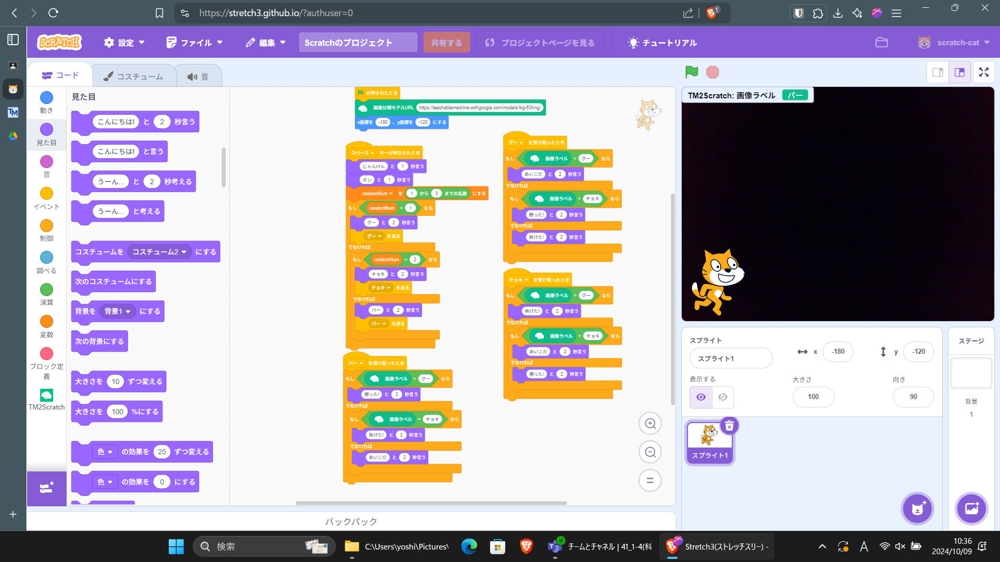
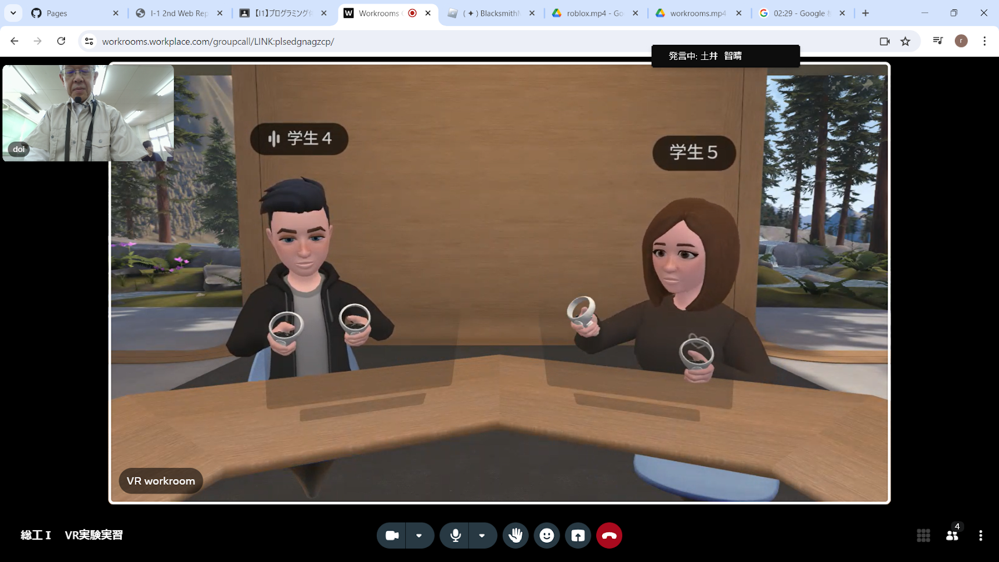
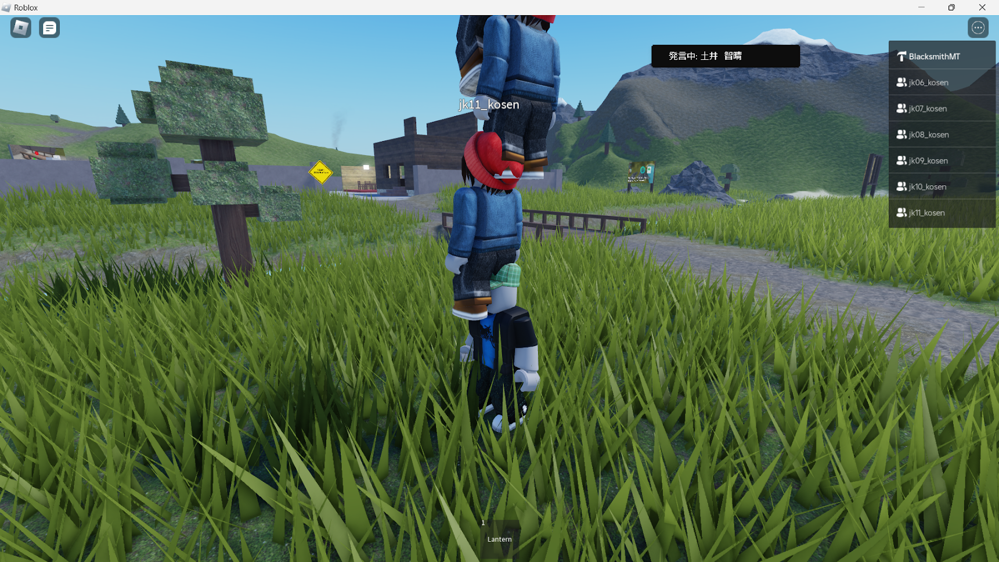

第2週目
2-1 2週目のレポートをHTMLで作る
1.内容
このレポートをHTMLで作成した。
2.感想
作成しているのが実習から少しした後なので内容を思い出すのが難しいと思った。
3. 2週目が完成した人は1週目のレポートも完成させる
2-2 機械学習体験

1.内容
teachable machine という機械学習サービスを利用して
グーチョキパーを判定するモデルを作成した。
また、人工知能について研究している松尾先生の講演の動画を視聴した。
2.感想
スペースバーを押下するとじゃんけんをすることができるようにプログラムを改造した。
また、講演動画の視聴では、人工知能自体の理論は古くから存在していたが、
コンピューターの性能の問題で発達していなかったということが分かった。
2-3 VR（バーチャルリアリティー:Virtual Reality）会議室の体験


1.内容
VR機器を使用して仮想空間上の会議室で会話したり、
robloxというサービスを使ってオブジェクトで遊んだりした。
2.感想
Robloxの調子が悪く、仮想空間上の高専にアクセスできなかったのが心残りだ。